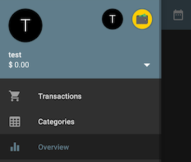
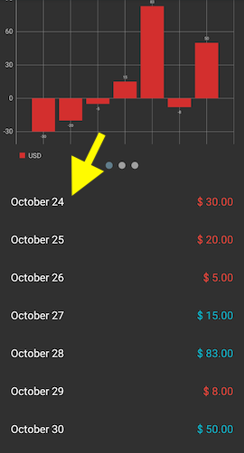
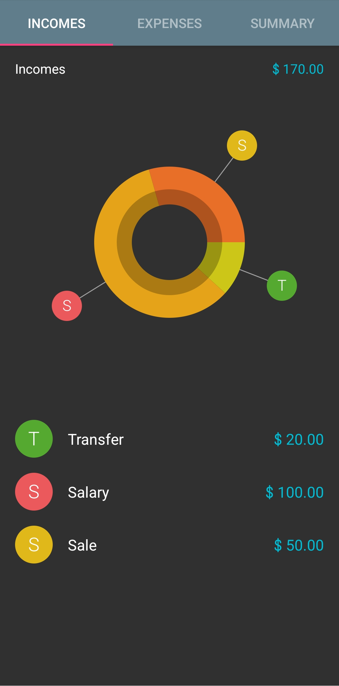
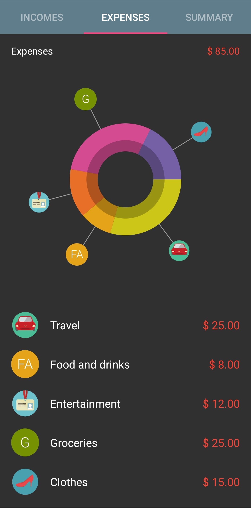
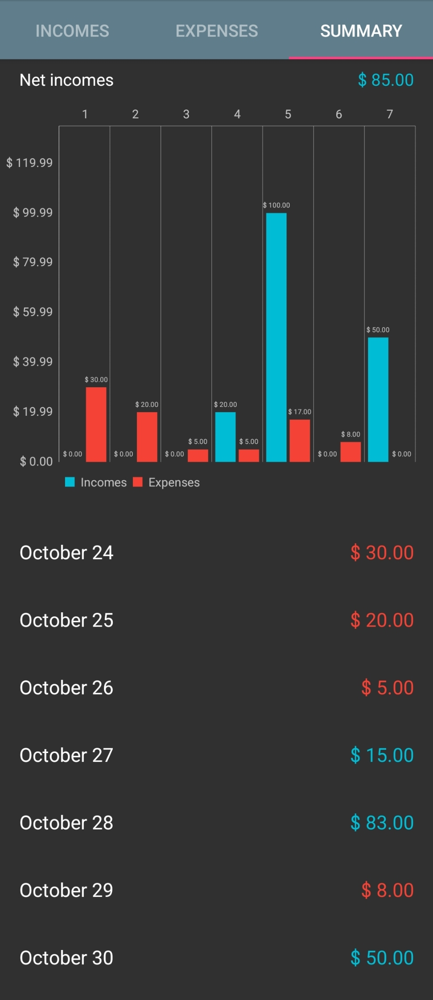
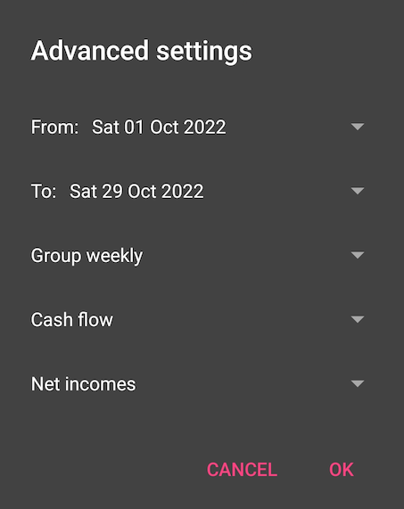

Charts
First, choose the wallet you want to analyze (total wallet lets you view all wallets). Then, access this menu by left menu > overview. These are also called "reports" by the app and this documentation.

Main Report
The main report is the first thing you see when you open the overview. There are 3 charts breaking down your finances by currency:
- a bar chart
- a line chart
- a radial chart
Drilldown Report
You can get a detailed view of each subgroup in the main report. To access this report, tap on any of the dates listed under the charts.

You will see three tabs. The incomes and expenses tabs will have pie charts breaking down spending by category.
 
The summary tab will have a grouped bar chart and a legend (to see the numbers more clearly if the chart is too crowded). Income and expenses have different colored bars, based on your theme. Every bar is a slice of the grouping time period (see report settings)
- Daily grouping makes the scale hourly
- Weekly grouping makes the scale daily
- Monthly grouping makes the scale weekly
- Yearly grouping makes the scale monthly
.
Tap on any slice in the legend to see the list of transactions.
Tap the arrow in the upper left, or press the back button on your phone, to exit to the main report.
Report Settings
Tap the calendar icon in the upper right corner. This brings up a dialogue menu to filter the data used in the report.

- From: the start date for the report
- To: the end date for the report
- Group: choose daily, weekly, monthly or yearly for the overview charts. For example, with "weekly" grouping, every point in the line chart represents the sum of transactions in a week.
- Next, you can choose between "Cash flow" and "Category". Cash flow allows you to filter transactions by "only incomes", "only expenses", or "net incomes" (both). Category allows you to filter by a transaction category.
Note
The grouping time period affects the main report. The drilldown report is always a sub-unit of the grouping time period.
The grouping affects the scale of the drilldown bar chart (see Drilldown Report). - Daily makes the chart hourly - Weekly makes the chart daily - Monthly makes the chart weekly - Yearly makes the chart monthly